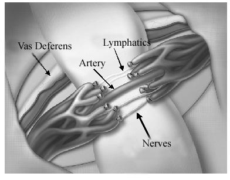

Clinic Services
Microscopic Varicocelectomy
Microscopic Varicocelectomy
Varicocelectomy is a surgery performed to remove enlarged veins in the spermatic cord. The procedure is done to restore proper blood flow to your reproductive organs. When a varicocele develops in your scrotum, it can block blood flow to the rest of your reproductive system.
-
Infertility
Varicocelectomy may reverse Subfertility in certain cases.
-
Testicular Pain
A high grade Varicocele maybe the cause of persistent dull aching testicular pain.
-
Varicocele Surgery
Microscopic Selection of veins allow for better surgical results with minimal or no postoperative pain.